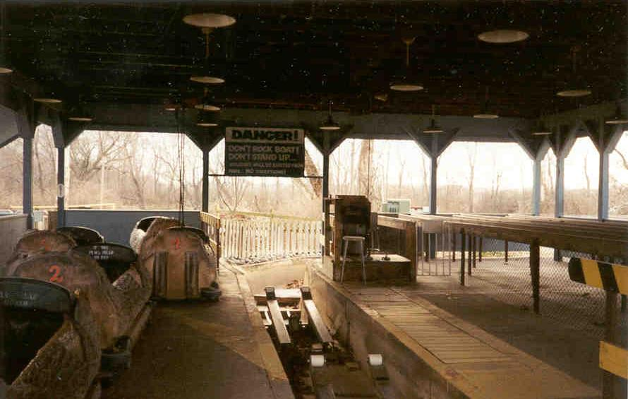
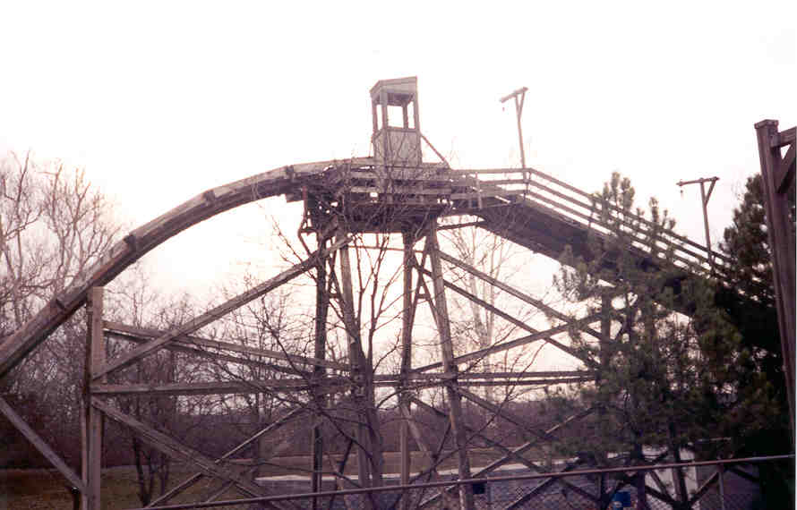
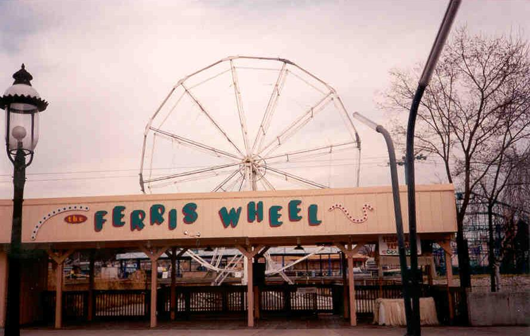
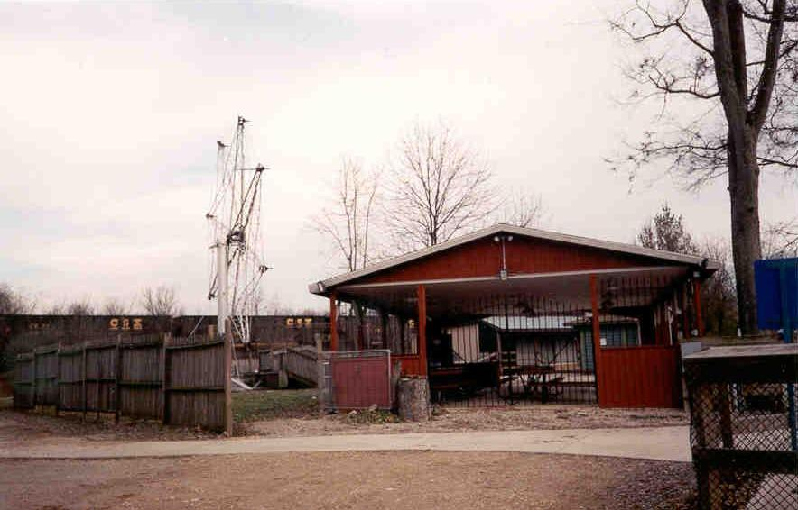
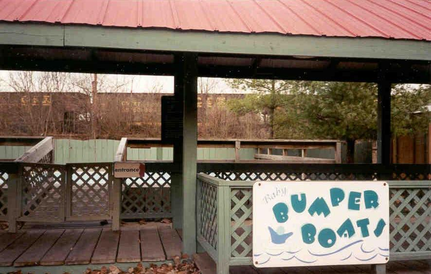
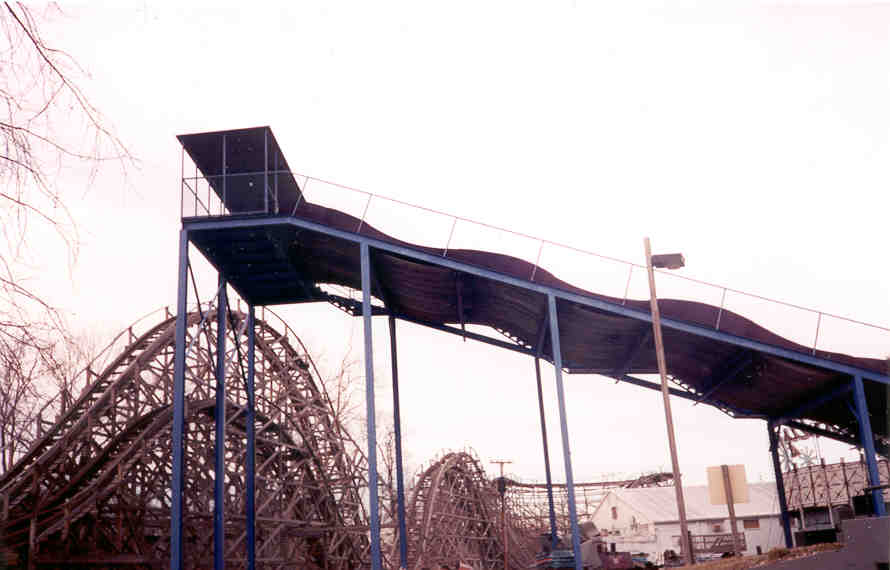

There are lots of rides at Americana; most of the cars, however, have been removed and placed
in either the auditorium or along the river which runs behind the park. One ride which still had
its rides (maybe because they’re heavy as hell) was the log ride.


Log Ride
There are also two ferris wheels. One is the main attraction, dominating the park at the center.
The other is the smaller, kiddy ferris wheel, which stands near the log ride in the remote Old
West section of the park.


Ferris Wheels
Other rides included old standbys such as the Tilt-A-Whirl, the Scrambler, Race Cars, Bumper
Cars, and Bumper Boats.


My personal favorite, though, was the big slide. One of the major reasons I went back at night
was so I could go down it. Of course, the guard put a big damper on that idea.

Americana Roller Coasters
Back to Americana Amusement Park